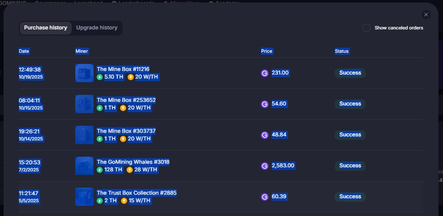
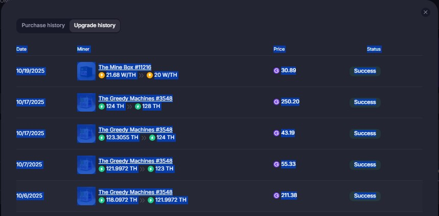
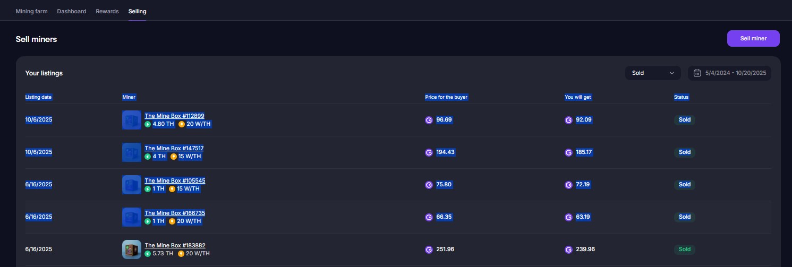

content_copy So kopierst du deine GoMining-Daten: Schritt für Schritt
1
Gehe in GoMining zu deiner Übersicht der Mining Farm.
2
Klicke auf Purchase History. Markiere alle sichtbaren Einträge auf der Seite wie im Screenshot und kopiere sie dann mit
Strg+C oder
Cmd+C.

Wiederhole das für jede Seite, falls es mehrere Seiten gibt.
3
Füge die kopierten Daten im Import-Tool in das Feld Purchase Input ein.
4
Wechsle in GoMining zu Upgrade History. Wähle wieder alle Einträge aus, also alle Seiten, kopiere sie und füge sie im Tool in das Feld
Upgrade Input ein.

5
Gehe in deiner Mining Farm zum Reiter Selling. Setze den Datumsfilter auf den maximalen Zeitraum und filtere optional nach "Sold". Wähle alle Einträge auf allen Seiten aus, kopiere sie und füge sie im Tool in das Feld
Selling Input ein.

Tipp: Wähle und kopiere in jedem Reiter immer alle Seiten, also bei Purchase, Upgrade und Selling. Du kannst den Vorgang beliebig oft wiederholen. Doppelte Einträge werden automatisch erkannt und ignoriert.
Zurück zur Import-Seite:
arrow_back Zurück zum Import